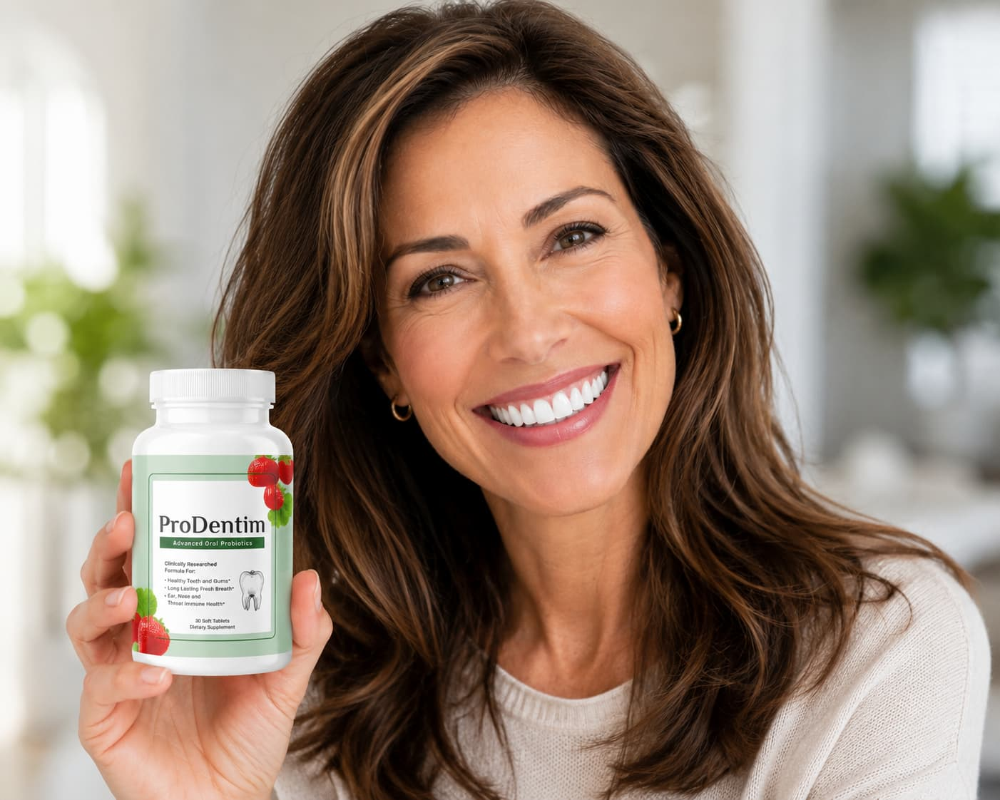

Over 95,000 people have already experienced the ProDentim difference — including thousands right here in the UK.
If you've been struggling with sensitive teeth, bleeding gums, or persistent bad breath — it's not your fault, and it's not because you're not brushing hard enough.
According to a growing body of research, the real problem is an imbalance of bacteria in your mouth. And here's the part that will surprise you: most toothpastes are actively making this worse.
By stripping away bacteria indiscriminately, conventional dental products destroy the very microbiome your teeth and gums need to stay healthy. The result? A vicious cycle of sensitivity, inflammation, and decay — despite years of careful brushing.
"Many oral health experts now point to bacterial balance — not just brushing harder — as the key to healthier gums, enamel, and breath."
— Dental Health ResearcherWhat people across the UK are doing differently
A growing number of people — many of them right here in the UK — have started using a doctor-formulated probiotic supplement called ProDentim that takes a completely different approach to oral health.
Rather than stripping the mouth of bacteria, ProDentim repopulates it with 3.5 billion probiotic strains specifically chosen to support the oral microbiome. It comes in the form of a soft chew — you simply take one each morning, and let it dissolve slowly in your mouth.
- Noticeably fresher breath — often within the first week
- Healthier, less sensitive gums — reduced bleeding and inflammation
- Whiter, stronger-feeling teeth — without harsh whitening chemicals
- Takes just 30 seconds a day — one soft chew each morning
What people are saying
"I've spent a fortune on dental appointments over the years. This has become part of my morning routine, and my dentist commented on the difference at my last check-up."
Margaret T., 54 — Leeds"Was very sceptical at first — seemed too simple. But after a few weeks I noticed a real difference, and my wife mentioned my breath too."
David K., 61 — Bristol"I take it with my morning coffee. That's the whole routine. Results speak for themselves — my last dental check was the best I've had in years."
Sandra R., 49 — ManchesterWatch The Free Video Presentation
See exactly how ProDentim works and why dentists are taking notice — no obligation, no purchase required to watch
▶ Watch The Free Video Now🔒 Secure page · No credit card to watch · 60-day money-back guarantee